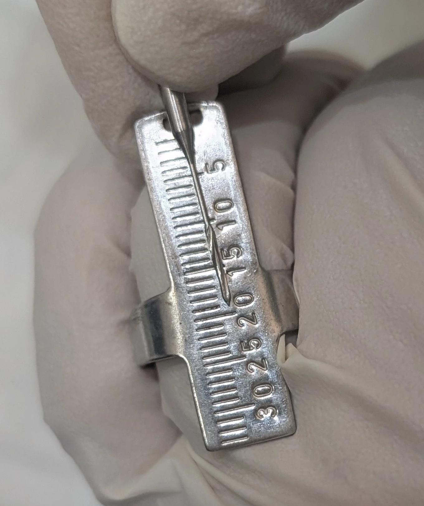

عددها اگر در ذهن باشند، ریسک کمتر میشود.
در پیزو تیپها:
خالیکردن کانال از اوریفیس تا حدود ۹ میلیمتر
در اغلب موارد یک Safe Zone محسوب میشود.
دانستن همین عدد ساده،
کنترل عمق را دقیقتر و کار را ایمنتر میکند.